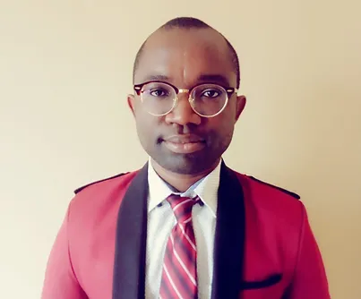

Associate Professor
Bochen Jia
Dr. Bochen Jia is an Associate Professor at the University of
Michigan-Dearborn, and his research focuses on occupational issues
related to worker capacity changes due to modern risk factors. He
is currently working on quantifying the impacts of exoskeletons on
worker performance and safety using digital human modeling
technology. He is particularly interested in understanding the
ability and limitations of human modeling technology in assessing
various human-exoskeleton interactions. Dr. Jia is currently
working as a task-group leader at ASTM International Standards
Organization to lead the efforts of establishing a practice to
guide the proper use of digital human models in the design and
evaluation of exoskeleton devices in both occupational and
nonoccupational settings. Armed with strong research advantages
for the automobile industry in Michigan, his research efforts also
extend to ergonomic issues associated with occupant behaviors
under complex driving conditions with advanced technologies, such
as connected and autonomous vehicle technologies. He is working on
understanding occupants’ in-vehicle physical activities during
prolonged driving.
PhD Student
Jesudara Omidokun
At the University of Michigan-Dearborn, Jesudara, a prospective
PhD student, conducts research on computer vision as a tool for
biomechanical analysis. He is currently employed by Hitachi
America as an intern for their connected vehicle R&D division. He
is currently interested in using computer vision techniques to
examine various human-exoskeleton interactions in order to
comprehend the potential and constraints of human modeling
technology.

PhD Student
Darlington Egeonu
Darlington Egeonu is presently a doctoral student in Industrial
and Manufacturing Systems Engineering at the University of
Michigan Dearborn. His research interests center on employing
digital human modeling and computer vision technology to simulate
the application of exoskeleton devices, which offer support for
injured and recovering workers. Additionally, his research extends
to the field of ergonomic risk assessment, where he is developing
a comprehensive strategy for the timely and non- invasive
evaluation of physical workloads in the workplace, utilizing AI
technology.